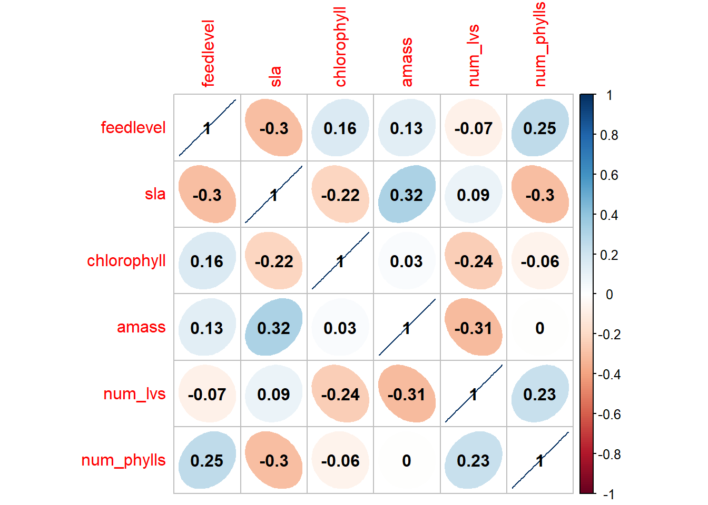
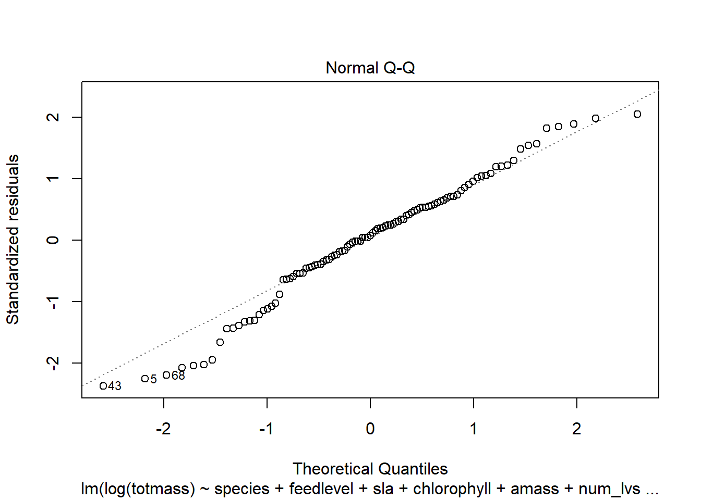
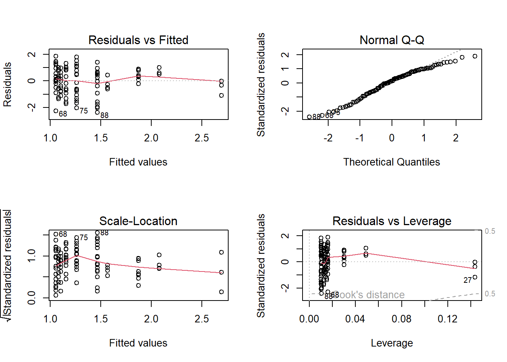
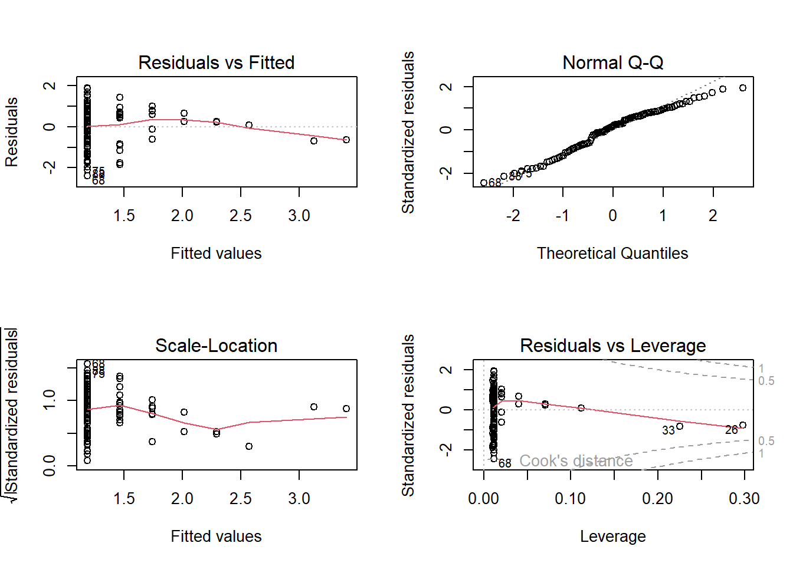
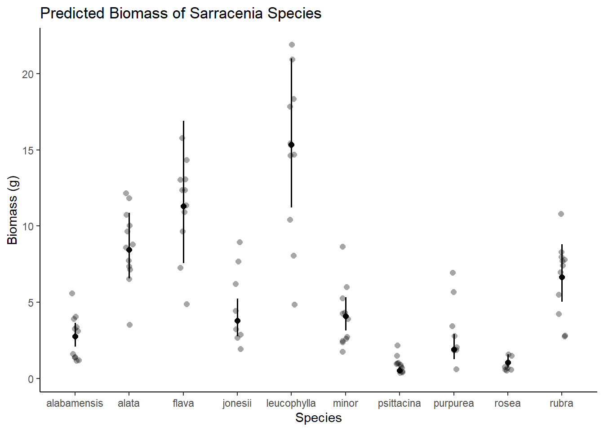

Sarracenia are carnivorous pitcher plants common in bogs of northeast America (“Sarracenia - The Pitcher Plants”). Sarracenia are important indicators of wetlands health as well as being a special niche in botany because of their carnivorous nature and intriguing appearance. In order to predict biomass, it would be important to look at different species of sarracenia because it is a genus of plants as well as physiological characteristics like how many pitchers are on the pitcher plant (Hoekman). Another possible predictor variable could be pitcher size on the plants (Bhattarai). The question being asked in this study is what variable within our data set best predicts biomass. The null hypothesis is that none of the variables, morphological, physiological, or taxonomic have a statistically significant correlation to biomass. The alternative hypothesis is that one of the variables such as species has a statistically significant effect on biomass and would be a good predictor.
Methods
Code
# should haveslibrary(tidyverse)library(here)library(janitor)library(ggeffects)library(performance)library(naniar)library(flextable)library(car)library(broom)library(corrplot)library(AICcmodavg)library(GGally)# would be nice to havelibrary(MuMIn)#library(equatiomatic)library(corrplot)
Reading in the data and organizing document using the [here] package.
Code
plant <-read_csv(here("data", "hf109-01-sarracenia.csv")) %>%# make the column names cleanerclean_names() %>%# selecting the columns of interestselect(totmass, species, feedlevel, sla, chlorophyll, amass, num_lvs, num_phylls)
Visualizing the missing data from “plants” by using “gg_miss_var”. Variables chlorophyll, amass, sla, num_phylls, and num_lvs have missing data. Variables on the y axis and # of missing data on the x axis
Code
# create a data visualization of missing data in plantsgg_miss_var(plant)
Sub-setting the data by dropping NA’s using the drop_na function.
Code
# create subste of data dropping nasplant_subset <- plant %>%drop_na(sla, chlorophyll, amass, num_lvs, num_phylls)
Creating a correlation plot using corrplot and using Pearson’s r. The variables are on botht he x and y axis and the Pearson’s r value is shown by color coded numbers between variables. The Pearson’s r value also shows whether the variables that intersect are positively or negatively related.
Code
# calculate pearson's r for numerical values onlyplant_cor <- plant_subset %>%select(feedlevel:num_phylls) %>%cor(method ="pearson")# creating a correlation plotcorrplot(plant_cor,# change the shape of what's in the cellsmethod ="ellipse",addCoef.col ="black" )

Plot each variable against each other in a pairs plot using ggpairs. The variables are on both the y and x axis and where they intersect the pairs plot shows how correlated they are through dot plots and the species row shows a box plot with error bars. There are also correlation values shown between the variables.
Code
# create a pirs plot (not correlation) for all of the variablesplant_subset %>%select(species:num_phylls) %>%ggpairs()
Starting regression here:
In order to determine the predictability of different variables, we create the null and full linear models.
Code
# making a null model, which is represented by a one and we only want it from the plant_subset datasetnull <-lm(totmass ~1, data = plant_subset)# now we include all of the variablesfull <-lm(totmass ~ species + feedlevel + sla + chlorophyll + amass + num_lvs + num_phylls, data = plant_subset)
Visually assessing the data using diagnostic plots for full model. The residuals vs fitted shows a fairly straight line with slightly cone shaped data. The normal q-q plot shows fairly uniform data and the scale-location shows a slightly positive linear relationship. The residuals vs leverage is pretty clumped but there are no data points past Cook’s distance.
Code
# create a diagnostic plot for full modelpar(mfrow =c(2,2))plot(full)
Code
# check normality and variance for full modelcheck_normality(full)
Warning: Non-normality of residuals detected (p < .001).
Transform the response variable (take the log 10) to transform your residuals to be normal because most of the data from the field is not normal.
Code
# transform data by taking the log of itfull_log <-lm(log(totmass) ~ species + feedlevel + sla + chlorophyll + amass + num_lvs + num_phylls, data = plant_subset)null_log <-lm(log(totmass) ~1, data = plant_subset)# check transformed data for normality and const varianceplot(full_log)

Code
check_normality(full_log)
OK: residuals appear as normally distributed (p = 0.107).
Code
check_heteroscedasticity(full_log)
OK: Error variance appears to be homoscedastic (p = 0.071).
Question: what predictor set of variables best explore the response?
Model 2
Code
# create a model with species predicting totmassmodel2_log <-lm(log(totmass) ~ species, data = plant_subset)
Check assumptions for model 2: using diagnostic plots and checking normality and variance. Data looks fairly normal with the line of best fit being fairly straight and no points past Cook’s distance.
Code
# plot the diagnostics for this modelpar(mfrow =c(2,2))plot(model2_log)
Code
# check for normality and variancecheck_normality(model2_log)
OK: residuals appear as normally distributed (p = 0.374).
Code
check_heteroscedasticity(model2_log)
OK: Error variance appears to be homoscedastic (p = 0.100).
Compare models using Akaike’s Information Criterion (AIC) values:
Code
AICc(full_log)
[1] 133.9424
Code
AICc(model2_log)
[1] 157.5751
Code
AICc(null_log)
[1] 306.0028
Code
# compare AIC values to null and full modelsMuMIn::AICc(full_log, model2_log, null_log)
# create a model comparing feedlevel and totmassmodel3_log <-lm(log(totmass) ~ feedlevel, data = plant_subset)
Check assumptions for model 3: using diagnostic plots and checking normality and variance. The data varies slightly from the normal line, especially in the normal q-q plot, but no data points are past Cook’s distance.
Code
# plot diagnostics for this modelpar(mfrow =c(2,2))plot(model3_log)

Code
# check distribution and variancecheck_normality(model3_log)
Warning: Non-normality of residuals detected (p = 0.018).
Code
check_heteroscedasticity(model3_log)
OK: Error variance appears to be homoscedastic (p = 0.261).
Code
AICc(full_log)
[1] 133.9424
Code
AICc(model3_log)
[1] 294.978
Code
AICc(null_log)
[1] 306.0028
Code
# compare AIC values against full and null modelsMuMIn::AICc(full_log, model3_log, null_log)
# create a model with num_phylls predicting totmassmodel4_log <-lm(log(totmass) ~ num_phylls, data = plant_subset)
Check assumptions for model 4: using diagnostic plots and checking normality and variance. This data, especially the scale-location plot, varied form the normal line but there are still no data points past Cook’s distance.
Code
# run diagnostic plots for this modelpar(mfrow =c(2,2))plot(model4_log)

Code
# check distribution and variancecheck_normality(model4_log)
Warning: Non-normality of residuals detected (p = 0.028).
Code
check_heteroscedasticity(model4_log)
OK: Error variance appears to be homoscedastic (p = 0.138).
Code
AICc(full_log)
[1] 133.9424
Code
AICc(model4_log)
[1] 293.8717
Code
AICc(null_log)
[1] 306.0028
Code
# comapre this model aganst null and full AIC valuesMuMIn::AICc(full_log, model4_log, null_log)
Data was called using [here] into an object that holds all of the data from the data set called “plant”. Then [clean_names] was used and the following columns were chosen to be shown within “plant”: totmass, species, feedlevel, sla, chlorophyll, amass, num_lvs, and num_phylls. Missing data was visualized using [gg_miss_var]. The visualization shows that chlorophyll and amass have the most missing data, followed by sla, and then num_lvs and num_phylls, and the rest had no missing data. The “plant” data set was then made into a sub set to get rid of the missing data called “Nas”. Using a correlation plot we visually represented the relationship between numerical variables in our data set. Using Pearson’s r, we found that the variables that have the strongest numerical relationship are num_lvs and amass, as well as sla and feedlevel and amass and sla. These variable relationships all have a Pearon’s value of more that 0.3. Using a pairs plot we visually represented how the data in each variable relates to another data from another variable. Looking at all of the plots, some variables with visually strong relationships are sla and num_phylls, where the dot plot shows as sla increases num_phylls decreases. This is also true for the relationship between sla and feedlevel. We created a null model in order to test against the null hypothesis that there is no relationship with totmass, and created the full model with all of the variables. In order to create the null model we used totmass ~ 1, and for the full model we used totmass ~ all of the variables. We visually assessed normality and homeoscedasticity via diagnostic plots of the full model. The data looks borderline homeoscedastic because the data is sort of cone shaped, but the line of best fit is fairly straight. Using the Shapiro-Wilk’s test shows that the data seems normally distributed and the Breush-Pagan test shows the variables have constant variance. Despite the visual diagnostic plots showing the data to have constant variance and normality, the check for normality and homeoscedasticity show that the data is not normal and has non-constant variance. To fix this we transform the response variable in order to transform residuals to being normal. In order to do this we create null and full log models. We evaluated multicollinearity by calculating generalized variance inflation factor and determined that species is the variable with the greatest vif value. All of the other variables have very similar vif values, all being around 2 and 3, whereas species gvif value is 42. For model 2 we tested the relationship between species and totmass. This model had normal distribution and was homoscedastic, but the AIC value was greater than the full model. The AIC for model 2 was 157.6, whereas for the full model was 133.9, so the full model is still the best model but there is a very strong correlation between species and totmass. For model 3 we tested how the variable feedlevel predicts totmass. While this model is homoscedastic, it is not normally distributed but we still used it because it seemed to have a large correlation to totmass. The AIC value was 295.0 for model 3, which is much higher than the full model’s 133.9 so the full model is still the best model. For model 4 we tested the predictability of num_phylls on totmass. Again this model was homeoskedastic but had non-normal distribution, but we still used it because of its correlation to totmass. Model 4’s AIC value was 293.9, so still much larger than the full model’s AIC value (133.9) and therefore the full model is still the best model.
table <-tidy(full_log, conf.int =TRUE) %>%# change the p-value numbers if they're really small using mutate# change the estimates, st err, and t-stats to round to ___ digits# mutate() %>% # make it into a flextableflextable() %>%# fit it to the viewerautofit()table
term
estimate
std.error
statistic
p.value
conf.low
conf.high
(Intercept)
-1.339043200
0.597726532
-2.2402271
0.027624109607483009
-2.527089405
-0.1509969955
speciesalata
1.113162580
0.184020930
6.0491086
0.000000035633453091
0.747401056
1.4789241035
speciesflava
1.404562038
0.262954818
5.3414577
0.000000728606298866
0.881910865
1.9272132117
speciesjonesii
0.319652351
0.196426010
1.6273423
0.107280978897063520
-0.070765614
0.7100703152
speciesleucophylla
1.709035391
0.227608275
7.5086698
0.000000000048774953
1.256639298
2.1614314841
speciesminor
0.389310367
0.187903472
2.0718636
0.041239074384119417
0.015831871
0.7627888636
speciespsittacina
-1.645197874
0.207034720
-7.9464830
0.000000000006356134
-2.056701798
-1.2336939506
speciespurpurea
-0.364347584
0.254380246
-1.4322951
0.155642631385408292
-0.869955868
0.1412607001
speciesrosea
-0.947383285
0.260494896
-3.6368593
0.000466976667424192
-1.465145097
-0.4296214723
speciesrubra
0.875341885
0.196361315
4.4578123
0.000024573993550445
0.485052508
1.2656312619
feedlevel
-0.474255269
0.234492879
-2.0224719
0.046198841611705246
-0.940335257
-0.0081752817
sla
-0.002493083
0.001160230
-2.1487826
0.034429589763780563
-0.004799167
-0.0001869994
chlorophyll
0.004368330
0.001189484
3.6724575
0.000414110175835848
0.002004101
0.0067325586
amass
0.002337656
0.002988210
0.7822929
0.436166480376765753
-0.003601736
0.0082770479
num_lvs
0.091763935
0.022413350
4.0941643
0.000094562482452723
0.047214976
0.1363128941
num_phylls
-0.039585071
0.051713890
-0.7654630
0.446067519262093981
-0.142372027
0.0632018848
Model prediction using the species variable as the predictor of totmass, species on x axis and biomass on y axis in grams. The species include alabamensis, alata, flava, jonesii, leucophylla, minor, psittacina, purpurea, rosea, and rubra. This data is shown through a dot plot separated by species and the mean is shown with standard error as error bars with data scattered behind the bars.
Code
# use ggpredict to make a model prediction using the full modelmodel_pred <-ggpredict(full_log, terms ="species", back.transform =TRUE)# plot the predicted data model_plot <-plot(model_pred, add.data =TRUE) +# change the theme and make the titles differenttheme_classic() +labs(x ="Species", y ="Biomass (g)", title ="Predicted Biomass of Sarracenia Species") model_plot

We found that the full model including feedlevel, species, sla, chlorophyll, amass, num_lvs, and num_phylls predictors best predicted a change in biomass. This model was chosen because despite testing single variables predictability of biomass, the full model consistently calculated the lowest AIC value and was therefore the best predictor model of biomass. The full model includes all of the variables in the data set, so including not only the species (which is a good predictor but not as good of a model as the full model) but also the rest of the variables includes all of the factors of the plant on the change in biomass. The full model also conforms to normal distribution and constant variance checked by the check_normality and check_homeoskedasticity. Having the full picture of physiological, taxonomic, and morphological factors in the prediction of the change of biomass would be an accurate prediction. Using model 2 to visualize how species predicts biomass (while the full model is the bets model, the species predictor variable had the second lowest AIC value).
Predicted biomass in grams of Sarracenia is plotted against the different species within the data set: alabamensis, alata, flava, jonesii, leucophylla, minor, psittacina, purpurea, rosea, and rubra. The different species differ dramatically in biomass, with leucophylla having the greatest preidcted biomass and psittacina having the smallest. The data is shown in a dot plot with means and standard error bars shown as well as data points shown behind it.
The full model includes all predictors such as chlorophyll amount, pitcher amount, feed level, and species. Having all of these predictor variables compunded into one model means having the biological “full picture” of each plant, meaning that this model gives a good representation of the interrelationships between the predictor variables that might also have an effect on the biomass. The way that the taxonomic characteristics affect the physiological characteristics play a part in biomass, so the full model represents the relationship between the physiological, morphological, and taxonomic characteristics of the Sarracenia plants.
Works Cited
Bhattarai, Ganesh P., and John D. Horner. “The importance of pitcher size in prey capture in the carnivorous plant, Sarracenia alata Wood (Sarraceniaceae).” The American Midland Naturalist 161.2 (2009): 264-272.
Hoekman, David. “Relative importance of top-down and bottom-up forces in food webs of Sarracenia pitcher communities at a northern and a southern site.” Oecologia 165.4 (2011): 1073-1082.
“Sarracenia - the Pitcher Plants.” Https://Botany.Org/File.Php?file=SiteAssets/Publications/Ajb/AJB_January_2023_Issue_Highlights.Pdf, 2023, botany.org/home/resources/carnivorous-plants-insectivorous-plants/sarracenia-the-pitcher-plants.html.